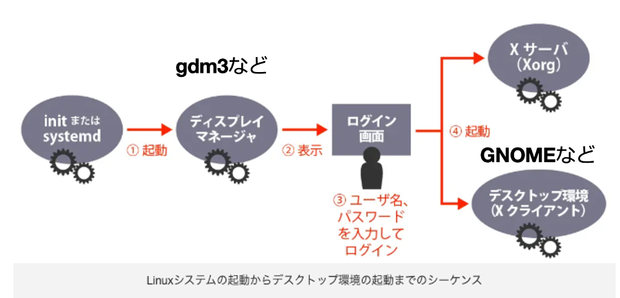
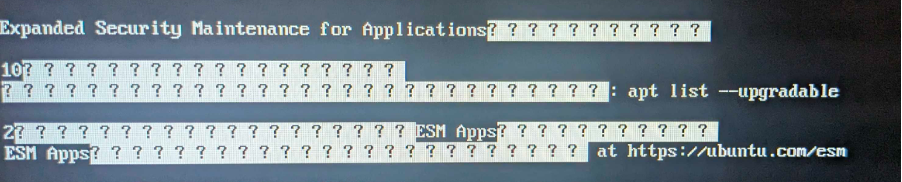
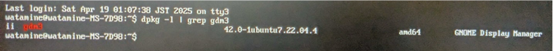
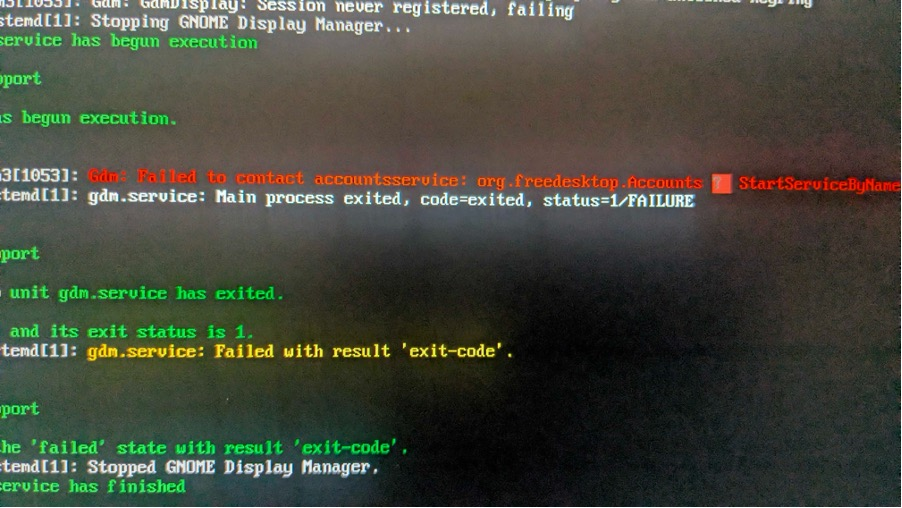

生じた問題
PCを操作していたら固まったので、強制再起動した．
ふだん通りUbuntuでユーザーを選択，パスワードを入力した．
いつもならここでデスクトプ画面が表示されるが，真っ暗のまま何も表示されない．
起動→OS選択→ユーザー選択までは問題なさそうだが，GUI (Graphical User Interface)に関わるどこかで不具合が起きている？
この問題を解決するべくとにかくいろいろ試しまくったのその記録です。
遠回りをしていそうですが、ついでにGUIやシステム的なところについて色々知ることができたので、このまま残そうと思います。
考えられる原因
おそらくGUIがうまく起動していないor認識されていない
下の図は、Linuxの起動~グラフィック出力の簡易図。
今回は起動、ログインはできるけどその先のデスクトップ環境に進めない状態
このフローのどこかに問題があると考えられる

https://hrzine.jp/article/detail/37を改変
仮想コンソールを起動する
Ctrl + alt + F3で仮想コンソールに入る
仮想コンソール…GUIを必要としないプロンプト.起動時だったり、グラボがクラッシュしたあとだったり、画面がうまくつかないときに使える
日本語対応はしていないので◆◆や？？のように文字化けする

とりあえずGUIを再起動する
startx
これは、X Window Systemと呼ばれる (上図のXサーバーとデスクトップ環境のイメージ)GUIシステムを起動するためのコマンド
しかし直らず
ディスプレイマネージャーについて調べる
1. ディスプレイマネージャーがインストールされているかチェック
Ubuntu 22.04の標準ディスプレイマネージャーはgdm3
dpkg -l | grep gdm3
dpkgはaptみたいな感じのパッケージ管理ツール ここでは、“gdm3”を含む、インストール済みのパッケージを確認

Ⅱ gdm3 42.0-1ubuntu7.22.04.4 amd64 GNOME Display Manager
ii → "installed（インストール済み）"
gdm3 → パッケージ名
42.0-1ubuntu7 → バージョン
amd64 → アーキテクチャ（64bit）
GNOME Display Manager → 説明
Gdmはインストールされている
gdmを再起動する
sudo systemctl enable gdm3 # 有効化
sudo systemctl start gdm3 # gdmの起動
sudo reboot # システムの再起動
直らず
2. gdm3のエラーログを確認
jounalctl -xeu gdm # gdmに関するエラーログを確認

GDM: Failed to contact accountsservice
GDMがユーザー情報を取得できず起動に失敗している可能性がある
accountsserviceという，liuxでユーザー管理をするパッケージをインストール
dpkg -l | grep accountsservice
# "accountsservice"を含むパーッケージがインストールされているか
何も出力がなかったので、未インストール状態
sudo apt install accountsservice
sudo reboot
直らず
ここまでやったこと
システム再起動、X window system再起動
デスクトップ環境(gdm) に問題があるかを確認した
いずれの手順でも原因はわからなかった。
次回 (後編)
デスクトップ環境やXサーバーを含む、X window systemについて異常があるか確認する